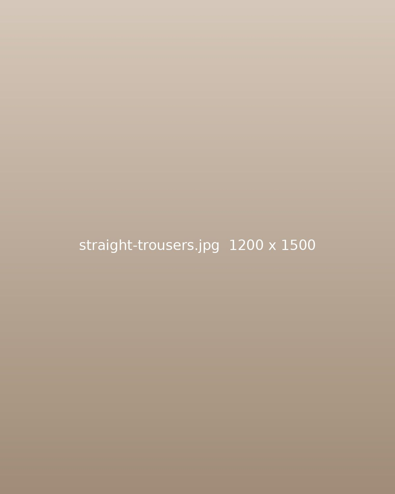

شلوار مناسب، بیشتر از هر لباس دیگری روی تناسب ظاهر اثر دارد. یک برش درست میتواند پا را بلندتر و فرم بدن را متعادلتر نشان دهد. در این راهنما میخوانید هر مدل شلوار برای چه فرم بدنی مناسب است و چطور قد و پارچهی درست را انتخاب کنید.
فرم بدن با نسبت شانه، کمر و باسن شناخته میشود. شلواری که این نسبت را متعادل کند، استایل را خوشفرمتر نشان میدهد؛ برای همین یک مدل ثابت برای همه جواب نمیدهد.
شلوار راسته از باسن تا مچ یکاندازه پایین میآید و خط پا را صاف و کشیده نشان میدهد. برای محیط کار و استایل روزمره، مدل پارچهای با کمر کشی هم راحت است و هم مرتب.

دمپای گشاد، پهنای باسن را با پایین شلوار هموزن میکند. مدل بگ هم با فاق متوسط، حالت راحت و امروزی دارد.
| مدل | مناسب برای | بهترین کاربرد |
|---|---|---|
| راسته | همهی فرمها | اداری و روزمره |
| دمپا | فرم گلابی، قد بلند | مهمانی و استایل رسمی |
| بگ | فرم مستطیلی | استایل راحت و دانشگاه |
برای دیدن همهی مدلها، به دستهی شلوار زنانه سر بزنید یا راهنمای کمد کپسولی را بخوانید.
مشاهدهی همهی شلوارهای زنانهشلوار راسته یا دمپای فاق بلند با قد تا روی کفش، و همرنگ کردن کفش و شلوار، پا را بلندتر نشان میدهد.
بله؛ مدل پارچهای دمپا با رنگ خنثی مثل مشکی، سرمهای یا کرم برای محیط کار رسمی و شیک است.
دور کمر و دور باسن را اندازه بگیرید و با جدول سایز صفحهی هر محصول مقایسه کنید؛ اگر بین دو سایز هستید، سایز بزرگتر را بردارید.